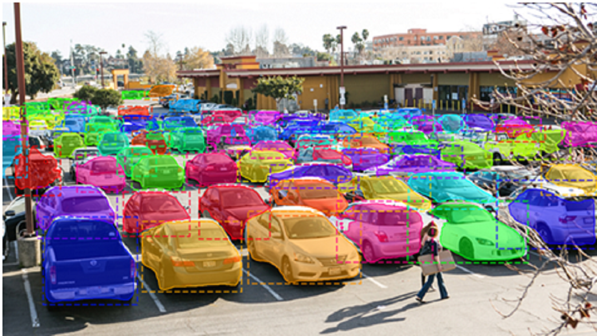
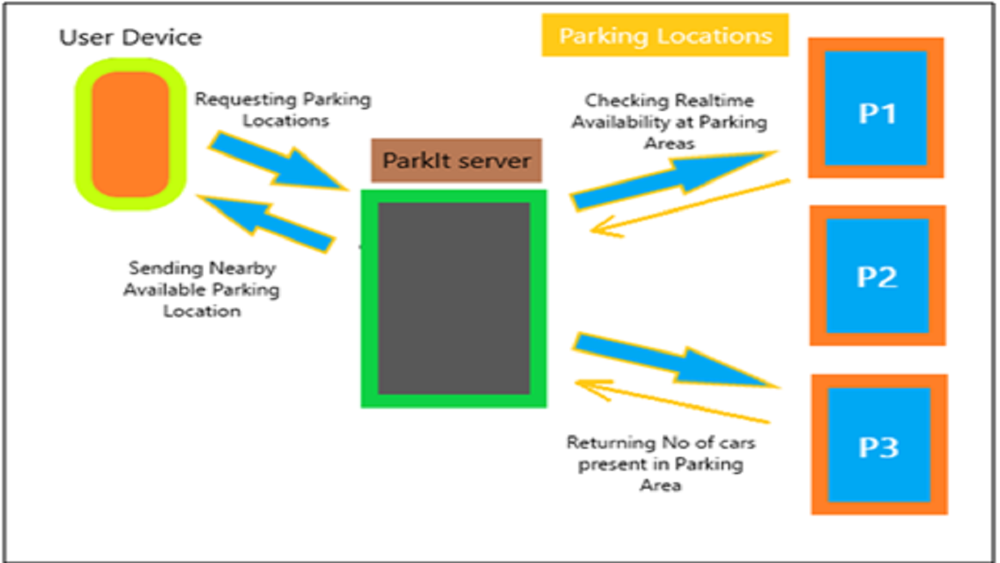
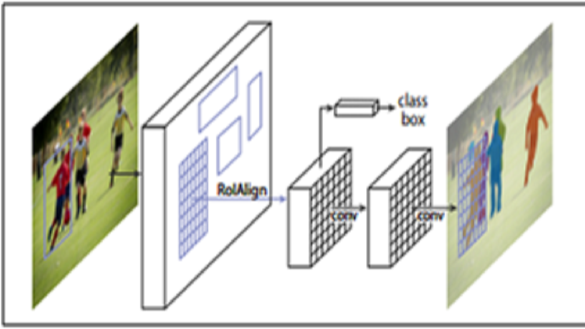
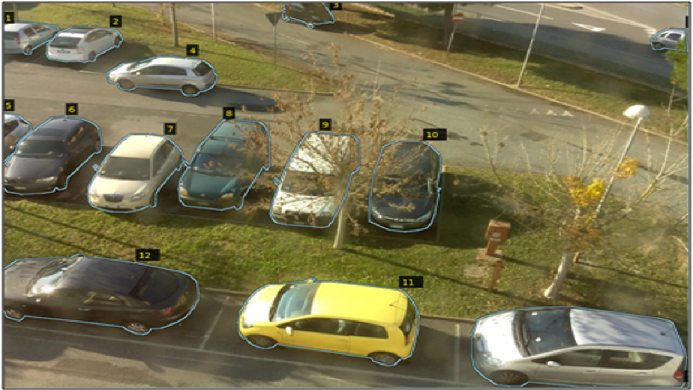
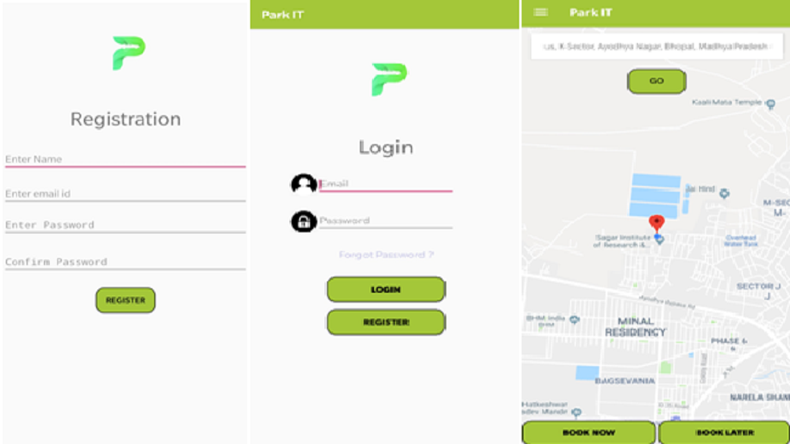
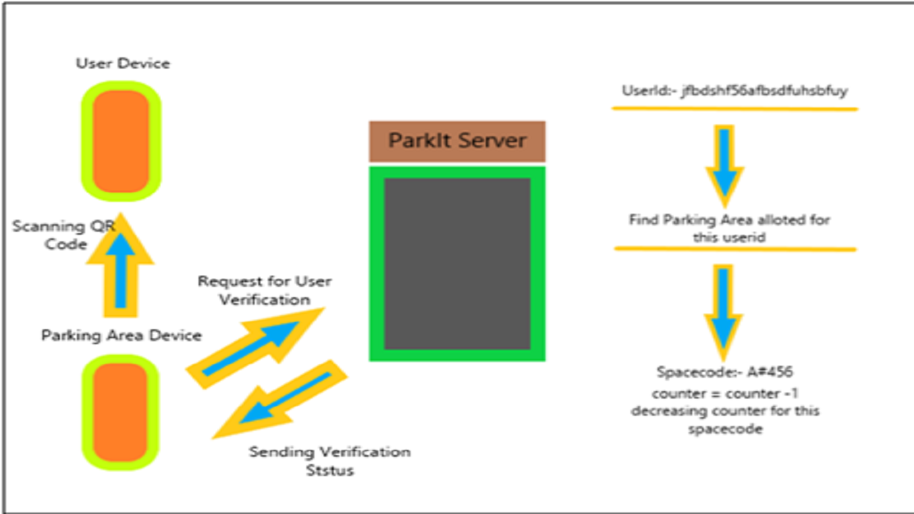
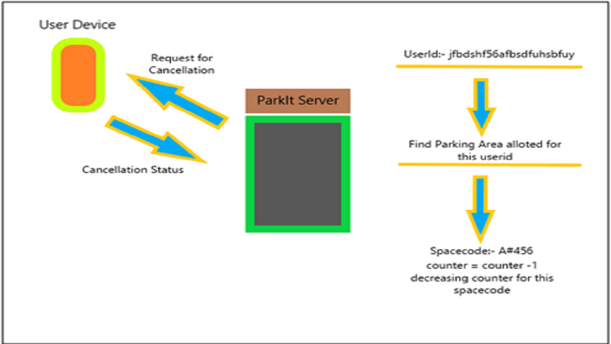

Park It
A camera-based system that works out which parking bays are genuinely empty, and lets a driver reserve one before setting off. Built with a team of five; it took us to the Smart India Hackathon 2019 finals.
The problem
India is the world's fourth-largest automotive market and its parking capacity has not kept pace. A meaningful share of urban congestion is just people circling, looking for a space. The information already exists — the lot owner can see their own lot — it simply never reaches the driver.
Existing solutions mostly fall into two camps, and both have a catch. Ultrasonic sensor grids need continuous maintenance and cannot tell a car from a pedestrian crossing the receptive field. Cell-based vision systems assume the lot is painted into discrete, known bays — which most real lots, especially informal outdoor ones, are not.
We wanted something with no per-bay hardware, no maintenance burden, and no assumption that the lot is neatly demarcated.

Approach
The lot owner installs an ordinary camera and draws a region of interest around their parking area, then sets a capacity. No painted cells required — the ROI can be any polygon they like.

Frames from that camera go to the server, which runs Mask R-CNN to detect and localise cars. A lot is considered to have space only when the number of cars found inside the ROI is below the owner's stated capacity. Because we count vehicles rather than probe fixed slots, the same approach works indoors and outdoors.
Availability, accounting for drivers already on their way
Detection alone overcounts availability: a driver who has booked but not yet arrived occupies a space the camera cannot see. So availability is computed as:
available = capacity − cars detected − outstanding bookings
The server searches lots within 200 m of the driver first, using the Google Distance Matrix API, and requests fresh frames from those candidates. If nothing is free it widens the radius to 400 m and repeats.

The model
Mask R-CNN extends Faster R-CNN with a branch that predicts a segmentation mask for each region of interest, in parallel with the existing classification and bounding-box regression heads. We used the masks and boxes to locate cars in frame.

Rather than train from scratch we applied transfer learning to a pre-trained network, annotating our own parking imagery with the VGG Image Annotator. That took mean average precision past 70% on our data — enough to be useful, and a reminder that the annotation effort, not the architecture, was the real cost.

The product
Drivers register once through Firebase Authentication, then enter where they want to park. The app fires a request carrying their coordinates and a user key; the response comes back as JSON, is parsed with Volley and cached locally so progress survives the app being backgrounded. Navigation to the chosen lot is drawn as a polyline route using the Google Directions API.

On arrival the lot owner scans the driver's ID, which fires the verification API and decrements the outstanding-bookings counter. Cancellation does the same in reverse, releasing the held space immediately.


Stack
Django server with a TensorFlow inference path; Android client using Firebase for auth and realtime state. Three APIs: nearby parking areas, booking cancellation and user verification.